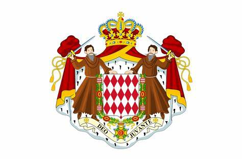
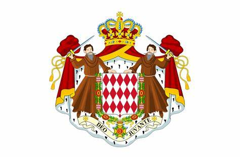

Története

Az ország 1215-ben jött létre és 1297-óta a Grimaldi-ház uralkodik. Történelme közel 75 évig volt Francia és egyéb befolyás alatt, majd 1861-ben elismerték az ország teljes függetlenségét a Francia-Monacói szerződésben.
Jelenleg II.Albert herceg az állam vezetője. Monaco egyike annak a kevés országnak ahol a mai napig is monarchia az államforma.
Gazdaság
Monaco főbb bevételi forrása a turizmus, a kaszinók és az éghajlat miatt. Az országban nincs jövedelem adó és a társasági adó is rendkívül alacsony, így vonzó a cégek számára is, ilyenek például a luxushajókat üzemeltető vállalatok is.
Monacoban nem szabályozzák a pénzmosást, különösen a kaszinók szabályait, e mellett a Monacói kormány akadályozza ezeknek az ügyeknek a kivizsgálását is, ez is nagyban hozzá tehet az ország jóllétéhez.
Monaco szoros kapcsolatban van az Európai Unióval, de nem tagja annak, mégis a fizetőeszköz az euró, sőt még joguk is van saját euró érméket verni.
Statisztikák
- Lakosság: 38 350fő
- Terület: 1,93km2
- Népsűrűség: 16 329km/fő
- Államforma: Monarchia
- Vezető: II.Albert herceg
- Legnagyobb város: Monte Carlo
Programok
Monaco-Ville: Rendkívül gyönyörű hercegi palota ebben a történelmi városban található
Monte-Carlo-i kaszinó: Világhírű luxus kaszinó, sok turista kívánja megnézni.
Óceanográfiai Múzeum: Rendkívül híres múzeum, csodaszép akváriumainak hála.
Formula 1
A Forma-1 legnevezetesebb futama, melyet 1929-ben rendeztek meg előszörm, viszont mára már a versenyzés egyik fő szimbólummává vállt.